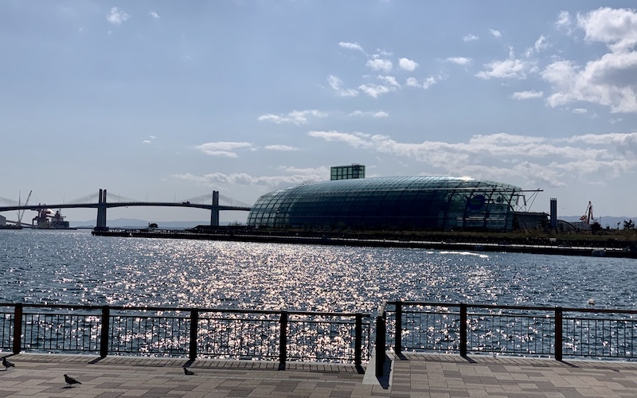
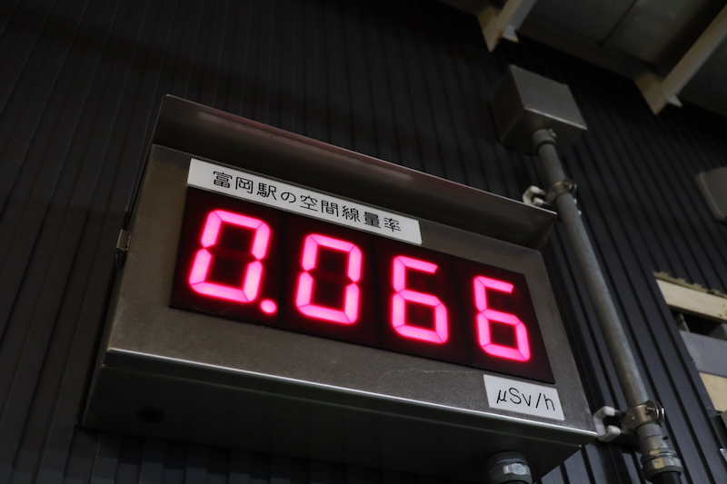

HAMADORI DISTRICT
OVERVIEW
Hamadōri (浜通り) is the easternmost of the three regions of Fukushima Prefecture, Japan, the other two being Nakadōri in the central area of the prefecture and Aizu in the west. Hamadōri is bordered by the Abukuma Highlands to the west and the Pacific Ocean to the east. The principal city of the area is Iwaki.
DESTINATION
IWAKI
Iwaki (いわき市, Iwaki-shi) is a city located in Fukushima Prefecture, Japan. As of 1 April 2020, Iwaki had a population of 337,765 in 143,500 households, and population density of 270 persons per km². The total area of the city is 1,232.02 square kilometres (475.69 sq mi), making it the largest city in the prefecture and the 10th largest city in Japan (2010) in terms of area. Iwaki is a designated core city, and is also one of the growing number of cities written in hiragana. The present Iwaki City started as the merger of 14 gallaryer municipalities on October 1, 1966. Every year Iwaki hosts the Taira Tanabata Festival from 6–8 August.
NUCLEAR ACCIDENT AREA
Fukushima accident, also called Fukushima nuclear accident or Fukushima Daiichi nuclear accident, accident in 2011 at the Fukushima Daiichi (“Number One”) plant in northern Japan, the second worst nuclear accident in the history of nuclear power generation. The site is on Japan’s Pacific coast, in northeastern Fukushima prefecture about 100 km (60 miles) south of Sendai. The facility, operated by the Tokyo Electric and Power Company (TEPCO), was made up of six boiling-water reactors constructed between 1971 and 1979. At the time of the accident, only reactors 1–3 were operational, and reactor 4 served as temporary storage for spent fuel rods.